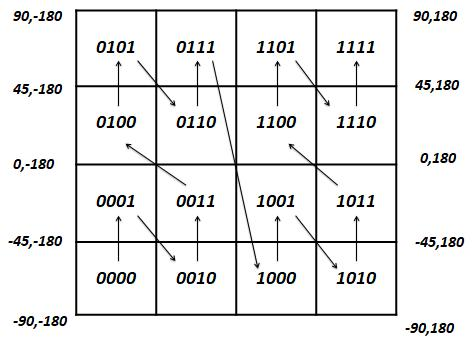
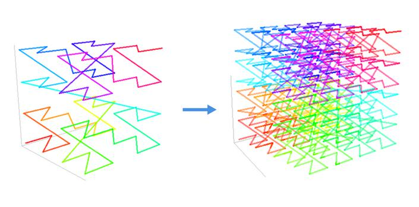

Machine Learning
The recent and rapid growth of GPS-enabled device and application has resulted in a rapid increment of spatio-temporal data which contains location information and time information, such as Taxi trace data, group-buying information, micro-blog information and so on. How to find information that meets users’ query requirement better in massive spatio-temporal has become a new trend. This paper proposes a kNN query method for spatio-temporal data. First, the spatio-temporal data need to be normalized and mapped because of the different method of measurement between time and location. The spatial-temporal data are mapped into three-dimensional space, each data could be corresponded to the only point in rectangle coordinate system. The distance between two points could be used to present the spatio-temporal similarity .
The ST-geohash (spatio-temporal geohash) index is proposed for the three-dimensional space. This index takes spatial dimension and time dimension into consideration which divides three-dimensional space into blocks and each block is related to string. The closer the distance between two data objects,the more the same public prefix is. This index can help us to find data objects which meets our requirement more quickly. On the basis of ST-geohash index, the corresponding k nearest neighbor quey algorithm is proposed. Due to the mutation of geohash coding, the block of query point need to be queried and the 26 neighbors blocks also need to be queried to ensure to find the acuurate result. Finally, based on a massive taxi trace dataset, comparative experiments are carried out to verify the efficiency of the kNN query method.
